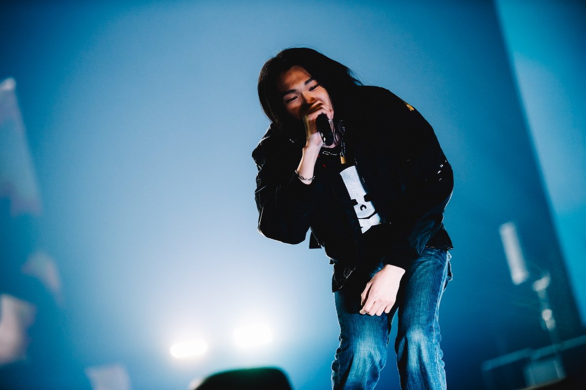
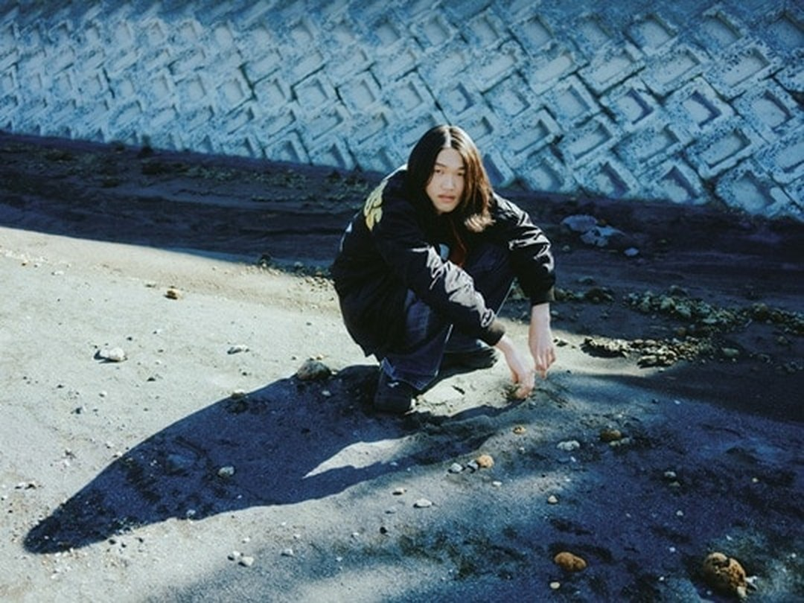

UNOFFICIAL FAN SITE

SCROLL
NEWS
最新情報ABOUT
Sonsiとは
2004年生まれ、鹿児島県鹿屋市を拠点に活動するラッパー。日常や家族、地元での出来事をそのまま持ち込んだリリックと、ユーモアと哀愁が同居する語り口で注目を集めている。
転機は、ABEMAのオーディション番組「RAPSTAR 2025」。過去最多6780人の応募者のなかからファイナリストに選出され、これをきっかけに本格的に活動を開始した。
2026年2月18日、Koshyプロデュースによるデビューシングル「OYJ」をリリース。父親への複雑な感情を綴った一曲で、アートワークは友人で絵画作家の坂本碧空が手がけた。同年6月10日には、全曲Koshyプロデュース、STUTSとWatsonが参加した1stアルバム『ニセモノ』を発表している。
7月8日には初のワンマンライブ『ホンモノ』をSpotify O-EASTで開催。8月7日には地元・鹿児島のCAPARVO HALLでも公演を行った。サマーソニック2026、POP YOURS 2026、SPOOKY PUMPKINなど、大型フェスへの出演も相次いでいる。
- 生まれ
- 2004年
- 出身・拠点
- 鹿児島県鹿屋市
- 活動開始
- 2026年（RAPSTAR 2025出演を機に本格始動）
- デビュー作
- 「OYJ」（2026年2月18日）
- 1stアルバム
- 『ニセモノ』（2026年6月10日）
出典：Wikipedia「Sonsi」／音楽ナタリーほか公開情報をもとに、ファンが編集したものです。
このサイトについて
Sonsiを追いかけているファンが個人でつくった、非公式のファンサイトです。公式SNSや各配信サービスに散らばっている情報をひとつにまとめて、「とりあえずここを見れば最新がわかる」状態をつくることを目指しています。
本人・所属先とは一切関係がありません。掲載内容に誤りがあれば直しますので、気づいた方は知らせてください。
MUSIC
ディスコグラフィVIDEO
ミュージックビデオLIVE
ライブ・出演情報MEDIA
公式SNS・配信COMMUNITY
ファンの集まる場所BOARD
ファン掲示板
0 / 500
誹謗中傷・個人情報・本人や関係者への迷惑になる投稿は削除します。